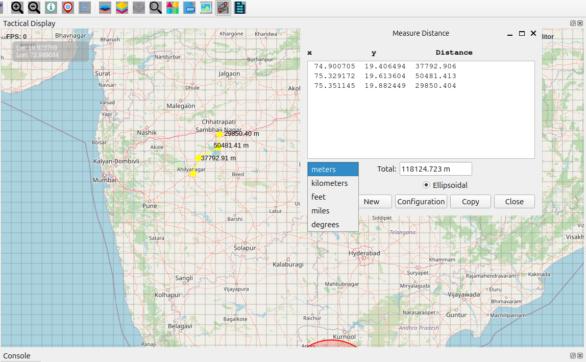

Measure Distance Features User Guide
Measure Distance Icon Overview
The Measure Distance button allows you to accurately measure distances between points on the map using multiple calculation methods and unit options. Ideal for planning, analysis, and operational measurements.
How to Use Measure Distance
Starting Measurement
Click the Measure Distance icon on the Design Toolbar
The cursor changes to a crosshair, indicating measurement mode
The Measurement dialog opens automatically
You are now ready to begin measuring
Measurement Process
Click on the map to set a start point
Continue clicking to add measurement points
Segments automatically connect between points
Real-time distance updates appear in the dialog
Double-click or press ESC to finish
Measurement Dialog Features
Segments Display
List of all measurement legs
Formatted columns for readability: - X coordinate (longitude) - Y coordinate (latitude) - Distance for each segment
Displayed in monospaced font for perfect column alignment
Total Distance
Running total of all segments
Automatic unit conversion
Appears as a read-only field for quick reference
Measurement Options
Calculation Methods
Ellipsoidal (Recommended — Default) - High accuracy for long distances - Uses the WGS84 ellipsoid model - Accounts for Earth’s curvature - Best for: Large areas, geographic-scale measurements
Cartesian - Faster calculation - Flat-plane geometry - Suitable for small areas - Best for: Local measurements, quick estimates
Unit Selection
Meters (default) — Base unit
Kilometers — Long-distance measurements
Feet — Imperial unit
Miles — Road-distance measurements
Degrees — Angular/geographic coordinate distances
{kind=link}
